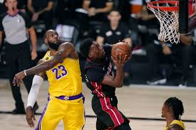

I know a lot of sports, and I basically know a little bit, but two of them are my favorites. They are pool and basketball. I have been in contact with basketball since childhood. It is a weapon for training physical ability. And I only play pool when someone invites to play in the pool hall, but why do I become obsessed with it, because This game emphasizes the stability and accuracy of the hand, the angle of incidence is equal to the angle of reflection, etc., which makes me very interesting.
